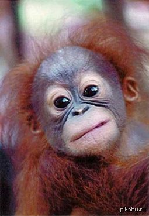

|  | Обезья́ны[1][2][3], или «сухоносые» приматы[3] (лат. Haplorhini), — подотряд млекопитающих из отряда приматов. Обезьяны отличаются по ряду признаков от другого подотряда приматов — полуобезьян. У гаплориновых приматов сухой нос и менее развитое чувство обоняния. Среди обезьян преобладают виды, рождающие одного детёныша. В целом, этот подотряд считается более развитым в эволюционном отношении. |